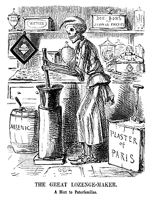

Understanding Dyslexia — Article 1
Clear, concise overview of dyslexia and practical reading strategies.
| Home | About Us | Light mode |

Clear, concise overview of dyslexia and practical reading strategies.
Practical tips for teachers, parents and students to improve comprehension.
Overview of tools and apps that help reading fluency and focus.
Where to find local and online support, groups, and further learning.